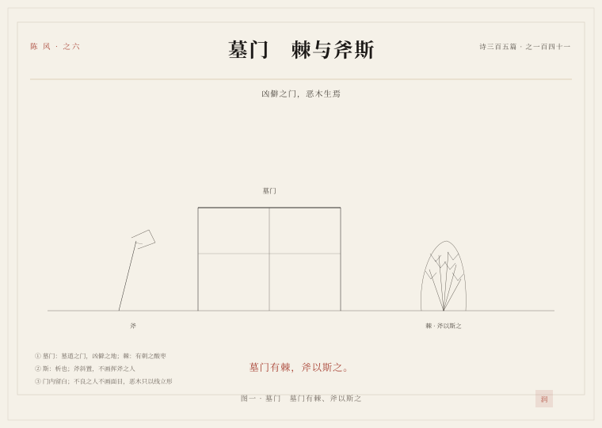
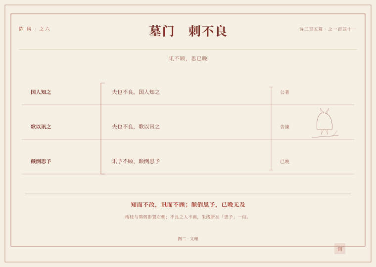

第一百四十一篇 墓门
陈风 · 之六 SJ141
朗读 · 普通话
依经文原文朗读，章次不读出；配古琴底乐，不改速、不加拖腔。全库同一音色（豆包 TTS），非播音员录制。
一 解题
诗三判：
- 谁在说：刺不良之人者。墓门有棘，斧以析之；夫也不良，国人皆知。告之而不顾，及至颠倒狼狈，然后思予之告。
- 说什么事：一章棘在墓门，斧以斯之；不良之人，国人知之，知而不改，畴昔已然。二章梅上鸮萃，歌以讯之；讯予不顾，颠倒思予。所刺者不良，所叹者不纳谏、而后思之已晚。
- 为何编在此：陈风前数篇写男女期会相接，此篇转入刺恶。陈之失由礼弛而政乱；《墓门》一刺，见一国人皆知之不良，恶加于万民。
《毛序》：“《墓门》，刺陈佗也。陈佗无良师傅，以至于不义，恶加于万民焉。”
朱子《诗集传》：“兴也。墓门，凶僻之地，多生荆棘。斯，析也。夫，指所刺之人也。谁昔，昔也，犹言畴昔也。○言墓门有棘，则斧以斯之矣；此人不良，则国人知之矣。国人知之，犹不自改，则自畴昔而已然，非一日之积矣。所谓不良之人，亦不知其何所指也。○兴也。鸱鸮，恶声之鸟也。萃，集。讯，告也。颠倒，狼狈之状。○墓门有梅，则有鸮萃之矣；夫也不良，则有歌其恶以讯之者矣。讯之而不予顾，至于颠倒然后思予，则岂有所及哉。或曰，讯予之予，疑当依前章作而字。”
本库的看法：《墓门》是一首刺不良之人、叹谏而不纳之已晚的诗。
毛序坐实「刺陈佗」，以无良师傅、不义恶民为说；朱子则谓「不良之人亦不知其何所指」，不专指佗。本库从毛序背景、朱子诗面：以陈佗之乱为背景，诗辞不指实某一姓名。
「讯予不顾，颠倒思予」是谏者口吻：告之不听，及至狼狈跌倒，才想起我先前的话；不改诗面，朱传「予／而」异文并列存疑。
断语：国人知之而不改，歌讯不顾而思晚；棘斯于门，鸮萃于梅，恶非一日之积。
先辨五事：「墓门」是墓道之门，凶僻之地；「棘」是有刺之酸枣，不是荆棘泛称；「斯」是析、劈，不是斯文；「夫」是指所刺之人，不是丈夫；「讯」是告、谏告，不是审讯问罪；「颠倒」是狼狈跌倒之状，不是颠倒衣裳。
二 经文
第一章
墓门有棘，斧以斯之。
夫也不良，国人知之。
知而不已，谁昔然矣。
第二章
墓门有梅，有鸮萃止。
夫也不良，歌以讯之。
讯予不顾，颠倒思予。
分章：二章，章六句。
三 韵读
- 一章：斯、之、之、矣，支之通押；棘，职部入声，起韵。
- 二章：止、之、予，之部；梅，之部；萃，物部，与「止」句末相属。
朱子叶「讯，息悴反；予，演女反」。
读法：一章支之相押，二章之部一贯；「夫也不良」一章不改，是全诗之骨；棘、鸮两兴象，一析一萃，皆所以刺不良。
四 字义与名物
- 墓门：墓道之门，凶僻之地。棘：酸枣，有刺之枣木。斯：析也，以斧劈析。
- 夫：指所刺之人。不良：不善、不正。国人：国中之人。已：止、改。谁昔：畴昔，从前、久矣。
- 梅：木名（一说当作「棘」，与上章相复）。鸮：鸱鸮，恶声之鸟。萃：集、止息。止：语辞。
- 讯：告也，歌以告谏。不顾：不回顾、不采纳。颠倒：狼狈、跌倒之状。思予：思我之告。
五 今译
墓道之门长着酸枣，拿起斧头把它劈掉。那个人啊心术不良，国中之人全都知道。知道了他还不改，这种情形从前就是这样了。
墓道之门有梅树，恶声的鸱鸮聚在上面。那个人啊心术不良，有人作歌把他劝谏。劝谏了他也不顾，等到跌倒狼狈，才想起我先前的话。
六 章旨
- 一章：写棘与斯、知与昔。棘在门则斧析之，人不良则国人知之；知而不改，其来已久。
- 二章：写梅与鸮、讯与思。鸮萃梅上以兴恶声，歌以讯之而不顾；颠倒之后思予，已晚无及。
- 总收：二章两兴象——棘可斧斯，鸮难驱除；不良之人，国人共知，谏而不纳，思之已晚。
七 诗教
- 兴：以墓门棘、梅鸮起兴，以凶僻之地多恶木恶鸟，兴不良之人在所不免；恶木有象，恶德有征。
- 观：观不良之迹如何公著——国人皆知，非一人之私议；知而不已，积非成是。
- 群：讯者与不良之人相对，国人旁观；一歌一讯，众知之而独不顾。
- 怨：怨在「颠倒思予」一叹；不指名陈佗，所刺是不纳谏之不良。
八 分寸与边界
- 不可把诗面坐实成陈佗一人之传。毛序指佗为背景；一指名道姓，兴象之诗就成了史传。
- 不可把「讯」读成审讯、问罪。讯是告谏；一读成鞠讯，歌讯之诗就成了劾状。
- 不可把「颠倒思予」读作悔悟从善。诗言及至狼狈才思我言，已晚无及；一读成改过，讽刺的冷意就散了。
- 不可把鸮画成可亲近的禽鸟。鸮是恶声之鸟，以剪影出之；一作吉祥之鸟，兴象全反。
- 不可把「谁昔然矣」读成追究远古往事。谁昔犹畴昔，言其由来已久；一作追远考世，诗意就歧。
- 不可以毛序「无良师傅」反推诗中必有师傅其人。序说师傅之教，诗面无师傅；一补出师傅，刺诗就成了教子之书。
九 存疑
- 诗旨：毛序「刺陈佗，无良师傅，以至于不义，恶加于万民」；朱子「不良之人亦不知其何所指」，不专指佗。本库以陈佗之乱为背景，诗面不指实。
- 「梅」：毛诗作梅；一说「梅」当作「棘」，与上章相复。两说并存，从毛诗作梅。
- 「讯予」之予：朱子「或曰，讯予之予，疑当依前章作而字」；予为我，而为语辞。两读并列，不硬断。
- 鸮指：鸱鸮为恶声之鸟；一说喻谗人，一说喻不良之人。从恶声恶鸟之兴象。
- 年代与作者：诗作于陈佗之世，还是事后追刺；作者何人，诗中无征。
- 编次：此篇居陈风第六，与前五篇男女之诗相次；由风淫转入刺恶，编次之意旧说未详。
十 跨典
- 《左传·桓公五年》：“陈侯鲍卒，陈乱，文公子佗杀太子免而代之。”——陈佗之乱，毛序所指之事；诗不指此事，事为诗之背景。
- 《论语·季氏》：“益者三友，损者三友……友便辟，友善柔，友便佞，损矣。”——无良师傅之戒；序所谓无良师傅，正与损友之戒相发。
- 《孟子·离娄上》：“中也养不中，才也养不才，故人乐有贤父兄也。”——教诲之责；不良而无师友之养，遂至不义。
- 《左传·襄公三十一年》：“我闻忠善以损怨，不闻作威以防怨。”——谏告之道；歌以讯之，乃忠善损怨；不顾而思，已晚。
- 《诗经·小雅·青蝇》：“营营青蝇，止于樊；岂弟君子，无信谗言。”——刺谗刺恶之诗；陈风此篇刺不良，与小雅刺谗同一风教。
十一 双卡与图
五对：
| 墓门（墓道凶僻之门） |
墓门（墓葬之门／城门泛称） |
| 棘（有刺酸枣） |
棘（荆棘泛称） |
| 斯（析、劈） |
斯（斯文） |
| 讯（告谏） |
讯（审讯问罪） |
| 颠倒（狼狈跌倒） |
颠倒（颠倒衣裳） |

图一 · 墓门 墓门有棘、斧以斯之

图二 · 墓门 国人知之，歌讯不顾，颠倒思予
读图三处：
- 墓门与棘：图一墓门双扉一线，棘生门侧，棘刺可数；斧一柄斜置，不作挥斧之人。门是凶僻之地，画空不画人。
- 梅与鸮：图二梅枝一本，鸮作剪影集于枝上，只画背与足，不画全形面目；恶声之鸟以剪影别之。
- 三事：图二「国人知之／歌以讯之／颠倒思予」三行相次，末行一朱线断在「思予」；不良之人不画面目，红只落在思予已晚一结。